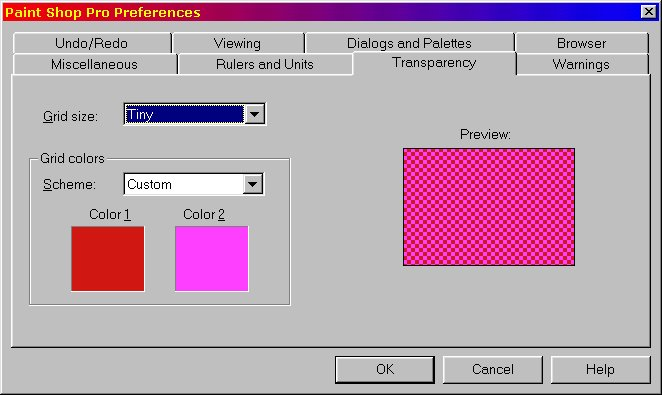

The gap in the image above is normally filled by an .ACE file bearing the same name as the .REF file in your route. Unless altered by the route developer, the default .ACE files displays as a black image with a transparency gradation around the edge giving it the fuzzy halo appearance.
The .ACE is automatically created by the Route Creation process.
First you need to decide what logo you are going to place there - something simple, easily recognisable when you select that particular route. I decided that a clipboard graphic might be appropriate for a Test Track route so I used Google's image search engine to give me a selection of likely suspects.
This is my "short list" of images:
The image I chose looked like this:
I've actually picked this because the greyish background will blend into the MSTS background colours quite nicely. As we're going to utilise the transparency within the .ACE file, the first thing to do is to get an image file we can work with.
Open TGATools.
Select File | Load. Browse to the "Test Track" folder and select File of Type: "ACE Image". Select Test Track.ACE, then click Open..
The screen will then look like this:
Select File | Save As
Save as Type: "Targa Image". Assign it a name, say "mylogo". Click Save.
Now open Paintshop Pro.
Select File | Open. Browse to "Test Track" folder. Select File of Type: Truevision Targa. Select File name: mylogo.tga. Click Open.
Well, that looks pretty underwhelming.
Click Masks | Load from Alpha Channel
Click "OK"
Now you can see the alpha or transparency layer.
(By the way, you can change the way the transparency layer looks in Paintshop Pro by clicking
File | Preferences | Click on Transparency tab, then make your changes.)

Now File | Open and select your logo image.
Click Edit | Copy or Ctrl-C. Close this file. The .TGA file is now on the screen.
Click Edit | Paste | As New Layer or Ctrl-L. Only the central part of the image is visible. Press the Deformation button on the toolbar at left (arrowed in image below): a box with ten little squares or "handles" will appear, outlining the true size of the overlaid image.
Grab one of the eight handles around the perimeter of the box and drag until the image just fits inside the underlying .TGA file with just a little bit of transparency showing:
Click on File | Save As. Make sure you're in Test Track. Select "Save as Type": as Truevision Targa (*.tga) and give it a name (say copy2).
Make sure the TGA options are set to "24-bit" and "Uncompressed" or your ACE will look scrambled.
Click Save.

A Warning message pops up. Click on Yes.
Open TGATool. Click File | Load. Select File of Type: Targa Image.
Click on copy2.tga. Click on Open.
Make sure the settings on the right of the screen are set as in the image below.
Click on Export | Ace (Alpha).

Select Test Track.ace. Click on Save.
You're done.
Open MSTS. Select your Route. Your new logo appears.
I know you're saying..... that's a lot of work just for a logo. Why not make an .ACE file from a .BMP or .TGA sized exactly 177x142 pixels? The answer is in the two screenshots below: at left, an .ACE file made from a simple .BMP file exactly 177x142 pixels in size and at right, using the transparency of the .TGA to blend and neaten the frame around the image. The image on right is just a little more "finished".
I hope you've found this tutorial of benefit.
Enjoy.